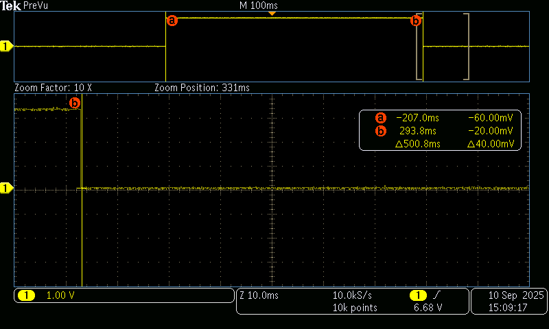
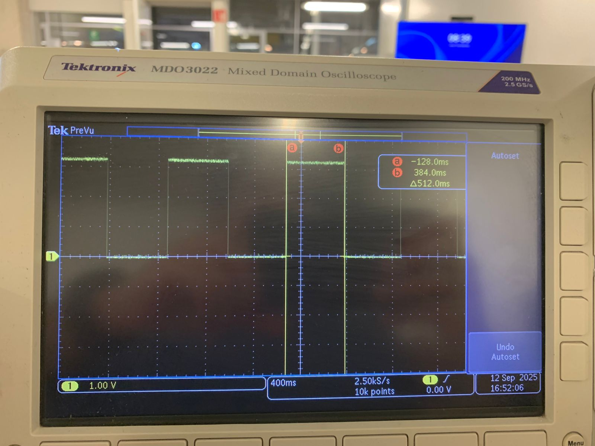

Tarea 5
Ejercicio 1
Genera una onda cuadrada por toggle de un pin de salida en la ISR de ALARM0, con rearme acumulativo y periodo nominal definido por ti (p. ej., 100 µs–5 ms). Mide con osciloscopio:
- Periodo promedio y tolerancia.
- Jitter pico-a-pico y, si tu equipo lo permite, RMS.
- Describe la configuración del osciloscopio (acoplamiento, escala de tiempo/voltaje, modo de medición). No cambiar la resolución del timer (mantener modo µs).
// Blink con timer (SDK alto nivel): cambia BLINK_MS para ajustar
#include "pico/stdlib.h"
#include "pico/time.h"
#define LED_PIN PICO_DEFAULT_LED_PIN
static const int BLINK_MS = 250; // <-- ajusta tu periodo aquí
bool blink_cb(repeating_timer_t *t) {
static bool on = false;
gpio_put(LED_PIN, on = !on);
return true; // seguir repitiendo la alarma
}
int main() {
stdio_init_all();
gpio_init(LED_PIN);
gpio_set_dir(LED_PIN, true);
repeating_timer_t timer;
// Programa una interrupción periódica cada BLINK_MS:
add_repeating_timer_ms(BLINK_MS, blink_cb, NULL, &timer);
while (true) {
// El trabajo "pesado" debería ir aquí (no en la ISR).
tight_loop_contents();
}
}

Ejercicio 2
Genera una señal por toggle en la ISR de ALARM0, primero en modo µs y luego en modo ciclos de clk_sys (mismo periodo nominal). En ambos casos:
- Usa rearme acumulativo.
- Mantén el resto del código idéntico
- Con el osciloscopio, mide y registra para cada modo:periodo promedio y desviación respecto al nominal, Jitter pico-a-pico y/o RMS, Compara resultados y discute el compromiso entre resolución de tick y horizonte de programación.
// Blink con timer de sistema (bajo nivel): programando ALARM0 e IRQ
#include "pico/stdlib.h"
#include "hardware/irq.h"
#include "hardware/structs/timer.h"
#define LED_PIN PICO_DEFAULT_LED_PIN
#define ALARM_NUM 0 // usaremos la alarma 0
// Calcula el número de IRQ para esa alarma
#define ALARM_IRQ timer_hardware_alarm_get_irq_num(timer_hw, ALARM_NUM)
static volatile uint32_t next_deadline; // próximo instante (en us) en 32 bits bajos
// Por defecto el timer cuenta µs (no cambiamos la fuente).
static volatile uint32_t intervalo_us = 500000u; // periodo en microsegundos
void on_alarm_irq(void) {
// 1) Limpiar el flag de la alarma
hw_clear_bits(&timer_hw->intr, 1u << ALARM_NUM);
// 2) Hacer el trabajo toggle LED
sio_hw->gpio_togl = 1u << LED_PIN;
// 3) Rearmar la siguiente alarma con "deadline acumulativo"
next_deadline += intervalo_us;
timer_hw->alarm[ALARM_NUM] = next_deadline;
}
int main() {
stdio_init_all();
// Configura el LED
gpio_init(LED_PIN);
gpio_set_dir(LED_PIN, true);
// "now" = 32 bits bajos del contador (tiempo en µs)
uint32_t now_us = timer_hw->timerawl; // lectura 32b (low) del contador
next_deadline = now_us + intervalo_us; // primer deadline
// Programa la alarma
timer_hw->alarm[ALARM_NUM] = next_deadline;
// Crea un handler exclusivo para ligar el callback a la IRQ de la alarma
irq_set_exclusive_handler(ALARM_IRQ, on_alarm_irq);
// Habilita dentro del periférico TIMER la fuente de interrupción para la alarma ALARM_NUM inte = interrupt enable
hw_set_bits(&timer_hw->inte, 1u << ALARM_NUM);
//Habilita la IRQ en el NVIC (controlador de interrupciones del núcleo)
irq_set_enabled(ALARM_IRQ, true);
while (true) {
// Mantén el bucle principal libre; lo pesado va aquí, no en la ISR
tight_loop_contents();
}
}

La diferencia se dio porque en el segundo código estoy trabajando directamente con los registros y las interrupciones, y ahí la precisión depende del tiempo que tarda el procesador en atender la interrupción y volver a programar el siguiente evento. Ese pequeño retraso se acumula y hace que la señal no sea tan exacta. En cambio, el primer código usa la función del SDK, que ya está optimizada para corregir esos retardos y mantener el temporizador más estable, por eso en el osciloscopio obtuve una señal más uniforme.